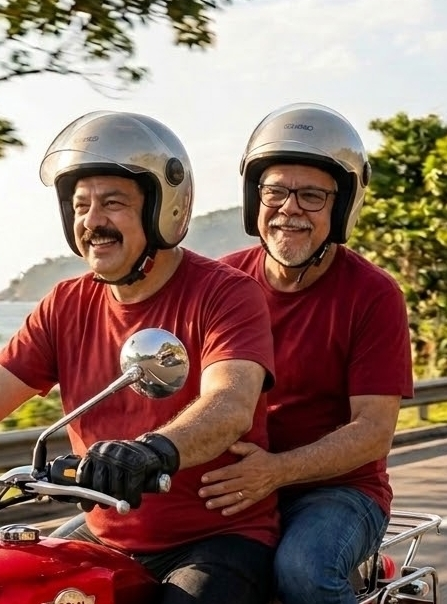
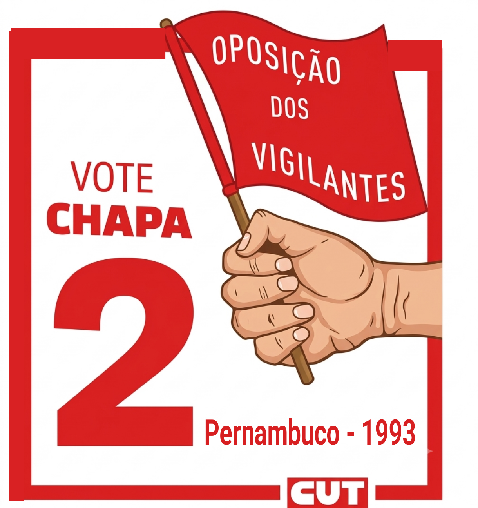

Depoimento
Por Gilson Silva
Dizem que a história oficial é escrita apenas nos registros oficiais, mas a verdadeira memória do povo é moldada pelo suor e pela convicção daqueles que nunca recuaram. O Vigilante Santos foi um desses gigantes anônimos para os arquivos institucionais, mas uma figura inesquecível para a categoria de oposição dos vigilantes de Pernambuco e para os companheiros que dividiram com ele as trincheiras da esquerda.
Homem de base, líder por natureza e vigilante valente, Santos trazia no peito a firmeza de quem protege a dignidade da classe operária. Na Recife de 1993, quando as bases exigiam voz e vez, lá estava ele na linha de frente da oposição sindical. Não buscava palcos; sua missão era o asfalto, a porta das empresas e o diálogo olho no olho. Santos era a tradução da militância raiz, movida por uma fé inabalável na justiça social e por um amor gigante pela esperança que a campanha de Lula representava.
Esse amor não andava devagar — ele corria, cortando o vento sobre duas rodas. No dia da eleição presidencial de 1994, quando Lula enfrentava Fernando Henrique Cardoso nas urnas sob o impacto do recém-lançado Plano Real, o peso da responsabilidade histórica estava nas nossas costas. Santos pilotava sua moto como se o próprio futuro dependesse daquela velocidade, rodando Recife de ponta a ponta para fiscalizar a votação.
Na sua garupa, estava eu. Eu pertencia aos quadros do PCB (Partido Comunista Brasileiro), mas, na época, nós do partidão estávamos firmes na frente ampla de apoio a Lula.
Subir na garupa de Santos era um teste para o coração. Ele corria tanto que o meu medo da velocidade me fez segurar nele com uma força descomunal. Dias depois, nas rodas de conversa, Santos fazia questão de rir e resenhar com todos os companheiros, imitando, em tom de brincadeira, o desespero com que segurei firme na sua cintura. Ríamos juntos, mas sabíamos que aquela adrenalina era o combustível da nossa entrega.
Estávamos juntos em uma missão árdua: a luta para derrubar o grupo de Souza da presidência do Sindicato dos Vigilantes de Pernambuco (Sindesv-PE). Queríamos arrancar a entidade das mãos de uma diretoria pelega para devolvê-la aos verdadeiros interesses dos trabalhadores. Infelizmente, naquela época não conseguimos.
Os registros oficiais podem silenciar sobre os heróis de base, mas a memória do afeto, da coragem e da verdadeira rebeldia operária é imperecível. O Vigilante Santos permanece vivo no exemplo e na lembrança eterna daquela garupa veloz de 1994, onde um petista e um comunista dividiram o mesmo vento e o mesmo sonho.
A caminhada foi dura e a estrutura sindical oficial continua blindada, mas a história não parou e não vai parar nunca, enquanto houver opressor e oprimido, ser antifascista e patrões desumanos é a nossa opção de luta e de vida.
Companheiro Santos, presente! A luta continua!
Local e data indicados no documento: Paulista, 19 de setembro de 2026.
Galeria da memória
Registros da Oposição dos Vigilantes de Pernambuco — 1993–1994.
A crise generalizada
Síntese do documento histórico da campanha
Contexto socioeconômico
Aponta que o povo brasileiro tem sido forçado pelos governantes a conviver com uma crise económica e social que resulta em milhões de desempregados, arrocho salarial e cargas horárias desumanas, tanto no serviço público como no setor privado.
Crítica ao Governo Itamar
Critica o governo pela política de favorecimento às empresas privadas e por negar aos trabalhadores uma política salarial justa que repasse, no mínimo, a inflação mensal.
Papel do Sindicato
Destaca que o movimento sindical tem o desafio de organizar os trabalhadores na luta por melhores condições de vida e de trabalho, armando a categoria contra os patrões.
Quem é quem nas eleições
Informações registradas no material histórico
Data da eleição
Dias 1, 2 e 3 de junho.
Opções de chapas
- Chapa 2 – Verdadeira Oposição dos Vigilantes: liderada por Santos, delegado sindical da Advance. O documento a apresenta como oposição combatente, apoiada pela CUT e pela maioria do movimento sindical em Pernambuco.
- Chapa 1: o documento a classifica como retrato do desmando e do descaso da atual diretoria.
- Chapa 3: o documento a associa a acordos “por debaixo do pano” com Souza para benefício próprio.
Nossas lutas
Pautas econômicas, sindicais, socioculturais e de organização
Questão econômica
- Contra a sonegação do FGTS, fiscalizando todas as empresas;
- Pela rediscussão com a classe patronal sobre o risco de vida;
- Para reaver os 5 meses de salário de março a agosto de 1990;
- Pelo repasse das perdas do Plano Bresser e das URPs;
- Por reajuste mensal;
- Pelo ticket refeição;
- Pelo pagamento quinzenal;
- Pela entrega dos vales-transporte de uma só vez;
- Contra o imposto sindical e pelo direito de ser contra a taxa assistencial;
- Pela jornada de 40 horas semanais.
Questão sindical
- Fiscalização sistemática às empresas;
- Convocação de congressos estaduais dos vigilantes;
- Participação efetiva dos vigilantes nas atividades da CUT;
- Aprovação do projeto do Deputado Chico Vigilante sobre a Lei nº 7.102;
- Denúncia de injustiça e violência contra trabalhadores;
- Defesa da cidadania;
- Contra o racismo e pela defesa da luta da mulher trabalhadora;
- Pelo fim do militarismo nas empresas.
Questão sociocultural e educacional
- Convênio com a Secretaria de Educação para ensino supletivo;
- Convênio com o SENAC para cursos profissionalizantes;
- Cursos de formação sindical;
- Discussão sobre convênios para atendimento médico;
- Plantão de 24 horas, inclusive fins de semana.
Estrutura e organização
- Fortalecimento do Departamento Jurídico;
- Reuniões mensais da diretoria abertas aos vigilantes;
- Microsistema de computação para agilizar atendimento;
- Gráfica interna para jornal e panfletos;
- Fim da mordomia, deixando carros do sindicato na garagem nos fins de semana;
- Direção colegiada.
Chapa 2 — Mudar para Avançar
Informações preservadas do material histórico
Quem faz parte da Chapa 2
O documento apresenta a Chapa 2 como alternativa de oposição e menciona Santos, Grimaldo e Romualdo, eleitos delegados sindicais em suas empresas, além de apoios de sindicatos de vigilantes de outros estados.
Ilustração central
No centro do panfleto encontra-se uma ilustração acompanhada da frase de ordem: “VOTE CHAPA 2”
O documento registra: “Essa logomarca foi criado por Gilson Silva (PCB).”
Lista Geral da Direção 1993
“Veja quem são os companheiros que vão assumir a diretoria do sindicato” — título registrado no documento.
Emerson Gonçalves dos Santos — Presidente (Advance)
Josinaldo Silva Medeiros — Dir. Administrativo e de Sec. (Liserve)
Edilson Alves Gama — Dir. Beneficiente (Nordeste)
Geraldo Alves da Silva — Dir. de Finanças (Spev. Norte)
José Risonildo Rodrigues — Dir. Comunicação Social e Imprensa (Nordeste)
Jailton Vieira da Silva — Dir. de Património (Selen)
Grimauro Barbosa da Silva — Dir. de Assuntos Sindicais (Nordeste)
Diretoria Adjunta: Jorgival R. Xavier; Noel Amâncio Soares; Valmir Ferreira dos Santos; Cleonildo Souza Siqueira; Sérgio A. dos Santos; Edmilson F. da Silva; Romualdo da S. Gonçalves; Grivaldo U. Leite; Valdir Luiz da Silva; Joselias A. da Silva.
Suplentes: Walter Marcolino da Silva; Elias Costa dos Santos; Giovanne Lúcio Gomes; Fernando C. de Oliveira; Marcelo M. do Rego Barros; Eraldo Hélio de Santana; Djalma Gomes da Silva; Djalma S. de Freitas; Manoel B. de S. Sobrinho; Hugo Santos dos Prazeres; José Fernando de Carvalho; Isaac José Costa; José Raimundo de, Filho; Otávio Félix F. Neto; José Gomes Nogueira; Jairo da Silva Lauro; Jamesson J. dos Santos.
Representantes da Federação: Marconi Cardoso Lins; José António Tenório. Suplentes: Edesio José da Silva; Severino D. dos Santos Filho.
Conselho Fiscal: Severino Lourenço Alves; Gilson Xavier de Oliveira; Sandoval Francisco Chaves. Suplentes: Edvaldo dos Anjos; Lupércio da Silva; Josias Lopes Pereira.
Deixe sua lembrança do Santos
Este espaço é para quem conviveu com o Vigilante Santos.
Conheceu o camarada Santos? Trabalhou com ele? Tem uma foto, um causo, uma história ou uma palavra que merece ser guardada? Sua lembrança ajuda a preservar a memória dele e da luta dos vigilantes de Pernambuco.
Envie sua contribuição para:
gilson2121@gmail.com
✉️ Enviar lembrança por e-mail
Aceito textos, fotos ou áudios. Se sua contribuição tiver foto, é só anexar no e-mail. Obrigado por participar — cada lembrança ajuda a manter viva a história do Santos e da luta dos vigilantes.
Sindicatos e sindicalistas que apoiam
Lista registrada no documento
- CUT – Central Única dos Trabalhadores
- SINTEPE
- SINDBORRACHA
- SINDPD
- STR Petrolândia
- STR Surubim
- Sindicato dos Comerciários de Caruaru
- CINDSEP
- SINDSEPPE
- SINTTEL
- Sindicato dos Gráficos
- STI do Açúcar
- Sindicato dos Bancários
- Sindicato dos Ferroviários
- Sindicato dos Vigilantes do Distrito Federal
- Sindicato dos Vigilantes da Bahia
- SINPRO
- Sindicato dos Trabalhadores nos Correios
- STR Serra Talhada
- STR Itapetim
- STR Ouricuri
- SISEPE
- Sindicato dos Jornalistas
- SINDSPREV
- Sindicato dos Aeroviários
- Sindicato dos Radialistas
- Sindicato da Construção Civil de Jaboatão
- Sindicato dos Bancários de Caruaru
- Chico Vigilante – Deputado Federal
Registro do documento
Comando Geral: Rua do Príncipe, 106 – SINTEPE
Telefones registrados: 222-2533 / 231-1396
Reunião: todos os dias às 18 horas — conforme o material.
O arquivo informa: “Documentos digitalizando por Gilson Silva e o Gemini descreveu o texto.”
Paulista, 19 de setembro de 2026.

Oposição dos Vigilantes de Pernambuco · 1993